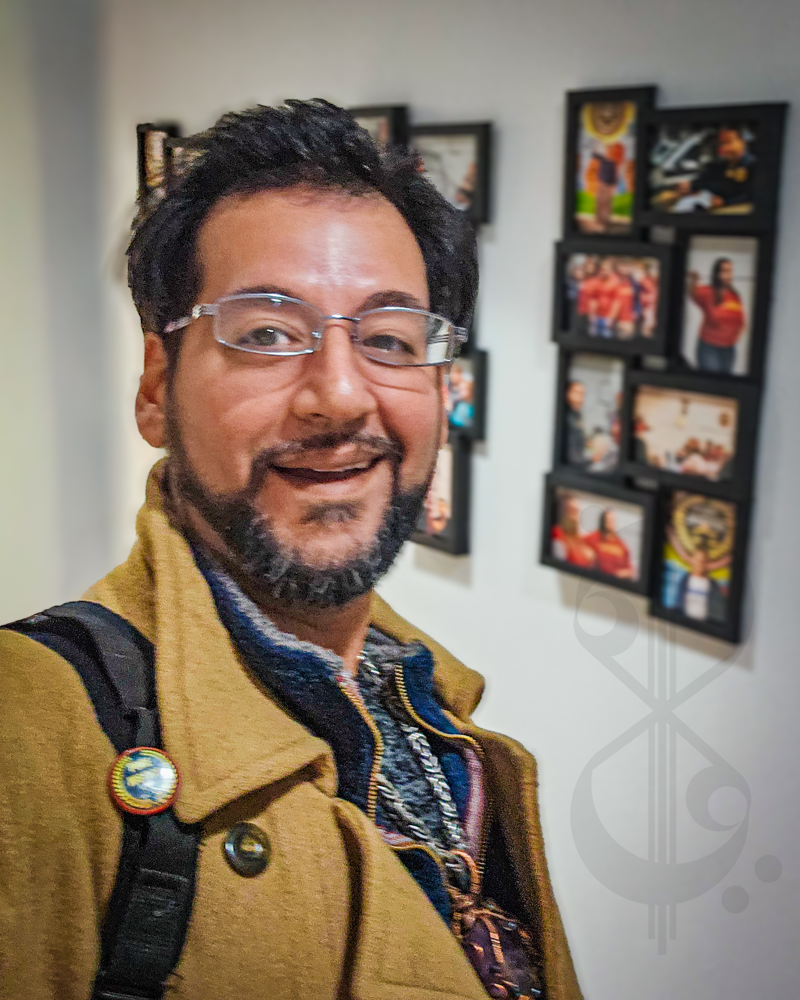

About the Publication
About Cadenza Arthouse
Cadenza Arthouse is an independent Houston publication built to document the artists, organizers, musicians, entrepreneurs, and community builders whose work shapes this city — and whose stories rarely find a lasting home anywhere else. Founded in 2017, the publication documents the people, places, and projects shaping Houston's cultural landscape.
Houston's creative and cultural life moves fast. Events happen. Projects launch. Communities build something real. And then the moment passes. Social media captures glimpses, not meaning. Event listings expire. Press coverage moves on. The people who did the work move on to the next thing. What remains is usually nothing.
Cadenza Arthouse was founded on the premise that this is not acceptable. The work happening in Houston's neighborhoods, art spaces, cultural corridors, and community institutions deserves documentation that outlasts the feed — reporting, photography, and editorial coverage that can still be found, read, and referenced years from now.
We are not a news outlet chasing daily stories. We are an archive being built in real time. Every article we publish is intended to serve as a permanent record — written, photographed, and preserved for future readers.
"The historical record is shaped by what people choose to preserve. Cadenza Arthouse exists to ensure Houston's cultural life is part of that record."
What We Publish
Cadenza Arthouse publishes work across several editorial forms:
- Feature stories
- Interviews
- Photo essays
- Event coverage
- Community reporting
- Cultural commentary
- Artist and entrepreneur profiles
We do not publish hot takes, trending commentary, or content optimized for platforms. We publish documents — pieces intended to remain readable and useful long after their initial publication date.
Coverage decisions are guided by a single question: will this story matter in ten years? If yes, it belongs in the archive.
Editorial Values
Documentation
Most cultural activity disappears without any permanent record. We exist to change that specific outcome — one story at a time.
Independence
Coverage is selected based on editorial judgment, community significance, and long-term archival value — not popularity, virality, or advertiser interest.
Curiosity
The most important stories are rarely the most obvious ones. We follow the work, not the noise.
Community
We cover the individuals, organizations, and projects actively shaping Houston's cultural and civic life — especially those who would otherwise go undocumented.
Permanence
We write for readers who haven't found us yet — and for people who will look back at this archive years from now trying to understand what Houston was building.
Editorial Direction

Frankie Mohammed
Founder & Publisher
Cadenza Arthouse
Cadenza Arthouse was established in Houston in 2017 with a specific editorial premise: that independent cultural documentation — real reporting, real photography, real editorial coverage — was not happening consistently at the community level, and that the absence of that documentation was a genuine loss.
The publication was built to fill that gap. Not as a blog, not as a social media presence, but as an editorial operation with a permanent archive at its center. Every story published here is intended to still exist, still be findable, and still be useful a decade from now.
Editorial direction is guided by a commitment to the communities and individuals whose work shapes Houston's cultural landscape — with particular attention to the people and projects least likely to be covered anywhere else.
Archive, Not Feed
Most online content is designed to disappear. It is optimized for the moment of publication and engineered to be replaced by the next thing. That is how platforms stay relevant. It is not how communities build a historical record.
Cadenza Arthouse operates differently.
Every article published here is a permanent document — added to an archive that grows more valuable over time, not less. The story about an artist in 2019 is not a "post from 2019." It is a record of something that happened, written by someone who was there, preserved in a form that can still be found and read in 2035.
Our goal is not simply to report what happened.
Our goal is to preserve why it mattered.
If you are doing work in Houston that deserves to be part of the permanent record — we want to hear from you.